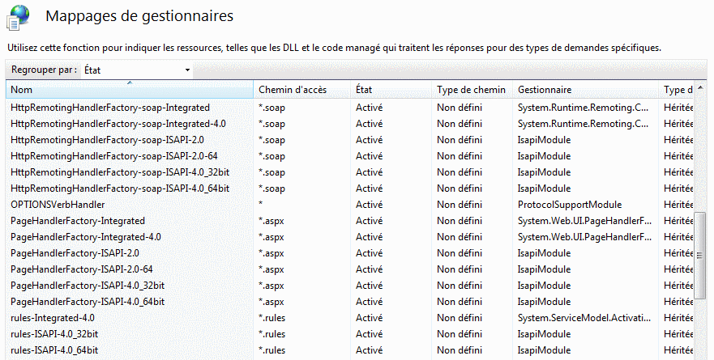

Les applications Harmony Web s’exécutent sur un ordinateur serveur Web, sur lequel doivent être installés les éléments suivants :
Versions minimales du système d’exploitation : Windows XP-PRO (avec le service pack 2), Windows 2003 serveur.
Serveur IIS de Microsoft, version 5.1 minimum.
Framework .Net 4.0 de Microsoft minimum.
Remarques :
Il est conseillé d’installer IIS avant le Framework .Net. Si le Framework est déjà présent au moment d’installer IIS, voir plus loin la remarque sur la commande aspnet_regiis –i.
Si IIS est installé, les Outils d’administration du Panneau de configuration doivent afficher l’icône suivante :
Pour installer IIS
Pour installer le composant IIS de Windows, allez dans le Panneau de configuration, Ajout/Suppression de programmes, Ajouter ou supprimer des composants Windows et sélectionnez le composant "Services Internet (IIS)".
Lors de l'installation de IIS, installez impérativement la fonctionnalité ASP.NET.
Lorsque IIS est installé, tous les paramétrages qui le concernent (voir rubrique Création d'une application IIS sur le serveur Web) s'effectuent par le Gestionnaire des Services Internet (IIS), accessible depuis le panneau de configuration.
Pour installer le Framework
Le Framework (version 4.0 minimum) peut être téléchargé sur le site de Microsoft.
Pour savoir s’il est déjà installé, consultez le Panneau de configuration, Ajout/Suppression de programmes ou vérifiez l’existence du répertoire Windows\Microsoft.NET\Framework\v4xxxx (v4 correspond ici à la version 4).
Vérification de la prise en charge des pages aspx par le serveur
Pour qu’une application Harmony Web fonctionne, il faut que le serveur Web prenne en charge les pages aspx. Sur la page d'accueil du gestionnaire des services Internet (IIS), double-cliquez sur le choix "Mappages de gestionnaires" (zone IIS). Vérifiez que l’extension .apsx est présente et active :

Si l’extension .aspx n’apparaît pas (ce qui arrive lorsque IIS est installé après le Framework .Net), il faut utiliser la commande aspnet_regiis :
Menu Démarrer à Exécuter à cmd
Sous la console de commandes :
cd c:\windows\microsoft.net\framework\v4.0.30319
aspnet_regiis –i
Remarque : le répertoire v4.0.30319 est donné à titre indicatif ; il représente la version du Framework qui servira de version « par défaut ».
Service IIS
IIS tourne sous la forme d’un service qui peut empêcher de renommer ou déplacer des répertoires, si ces derniers sont pointés par des répertoires virtuels. La solution pour pallier cette difficulté consiste à arrêter momentanément le serveur Web. Pour cela, stoppez le service de Publication World Wide Web depuis le gestionnaire de services (Panneau de configuration à Outils d’administration à Services).